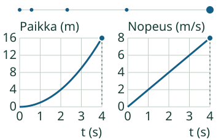
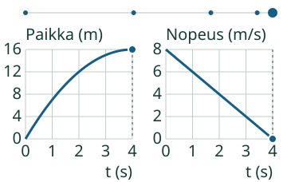
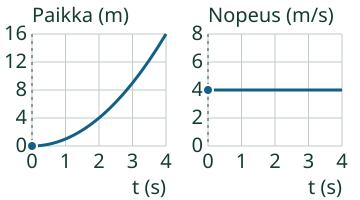
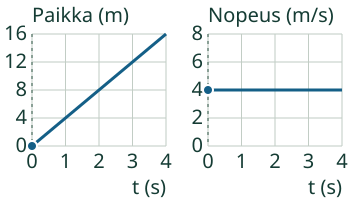
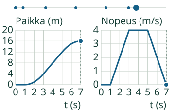

Aava: Yksi liike, kaksi kuvaa.
Yhdistän kuvaajat.
Vasemman kuvan jyrkkyys kertoo nopeuden. Oikeasta kuvasta sama nopeus luetaan korkeutena. Pisteet näyttävät saman kellonhetken.
Pohdi ensin: voiko toinen viiva nousta samalla kun toinen pysyy vaakasuorana?
Katso kaksi esimerkkiä
Nopeus kasvaa
Hetkellä 1 s paikka on 1 m ja nopeus 2 m/s. Hetkellä 3 s paikka on 9 m ja nopeus 6 m/s. Paikka ja nopeus ovat eri suureita, vaikka molemmille piirretään viiva.

Loikka jarruttaa
Paikka kasvaa edelleen mutta yhä hitaammin. Vasen käyrä nousee loiventuen, oikea viiva laskee. Laskeva nopeusviiva ei tarkoita paluuta lähtöpaikkaan.

Muista ero: tasaisessa liikkeessä vasen viiva nousee suorana ja oikea on vaakasuora nollan yläpuolella. Levossa paikka pysyy samana ja nopeus on 0. Pelkkä sana ”vaakasuora” ei siis riitä: katso myös suure ja korkeus.
Tahallinen virhepari
Tämä pari on tarkoituksella ristiriitainen. Vasemmalla paikkakäyrä jyrkkenee, mutta oikealla nopeus väitetään muuttumattomaksi.

Kokeile itse
Millaista viivaa tasainen liike tekee kumpaankin kuvaan?
Kaksi kuvaa samasta liikkeestä.

Ajattelun tueksi
Paikka kasvaa joka sekunti 4 m. Nopeus pysyy 4 m/s:ssa, joten se ei kasva.
Kuvaajan luvut taulukkona
| t (s) | x (m) | v (m/s) |
|---|---|---|
| 0 | 0 | 4 |
| 1 | 4 | 4 |
| 2 | 8 | 4 |
| 3 | 12 | 4 |
| 4 | 16 | 4 |
Tehtävällä on oma kuvapari. Voit vastata suoraan tai käyttää esimerkkiä ja apua. Molemmat pyydetyt kuvaukset tarvitaan; oikea toinen kuvaus ei yksin riitä koko vastaukseksi.
Uusi tilanne: liike vaihtuu
Loikka lepää aluksi, lähtee liikkeelle, kävelee tasaisesti ja jarruttaa. Tapahtuma vaihtuu molemmissa kuvissa samalla kellonhetkellä.

Kokeile mallivalikon vaihemallia. Pysäytä samaan hetkeen ja kerro ensin, mitä tapahtuu, sitten miten kumpikin kuva näyttää sen. Erilaiset pystyasteikot eivät yksin tarkoita eri liikettä: tarkista luvut ja yksiköt.
Alla oleva malli alkaa levon, lähdön, kävelyn ja jarrutuksen tilanteesta. Käynnistä tai askella sitä itse ja vertaa saman hetken kuvaajia.
Tutki liikkeen vaiheita tässä
Malli on ilman JavaScriptiä alkuperäisessä kohdassaan: avaa mallin kohta.
Opettajalle ja ilman ruutua
Luokat 7–9, kanoninen integraatiorooli säilyy. Molemmat erotetut alitaidot PHY79-ACCEL-MOTION-GRAPH ja PHY79-ACCEL-VT-GRAPH ovat vaadittu all_of-ryhmä; niitä ei muuteta vaihtoehdoiksi eikä uudeksi laskenta-/derivaattaportiksi. Oppilas yhdistää saman tapahtuman merkityksen ja selittää kahden kuvan suhteen. Oikea paikallinen vastaus ei todista molempien esitietojen tai koko integraation itsenäistä hallintaa.
Tuki voidaan paikantaa erikseen paikan ja nopeuden kuvaukseen. Palaute erottaa ne, mutta ei muuta epäonnistunutta kokonaisuutta hallinnaksi. Tee tuettu kierros ja sitten uusi vastaava pari ilman apua; tämä sovellus ei tallenna niistä formaalia itsenäistä tai viivästettyä näyttöä. Ei henkilökohtaista historiaa, globaalia oppijatasoa tai runtime-LLM:ää.
Paperilla: pyydä piirtämään samasta oikealle suuntautuvasta liikkeestä kaksi kuvaajaa ja merkitsemään samat vaiheen vaihtumishetket. Pyydä perusteluksi paikan jyrkkyyden ja nopeuden korkeuden yhteys, ei vain oikeaa vaihtoehtoa. Akselit ja suureet on nimettävä. Arvioi perustelu aidosti; agentin tai selaimen koe ei ole oppilasvalidointi.
Tässä malli on yksiulotteinen, lähtöpaikka 0 m ja nopeus ei-negatiivinen. Tässä rajauksessa paikka x ja kuljettu matka s ovat samat; yleisesti ne ovat eri suureita. Paikka integroidaan täsmällisesti paloittain lineaarisesta nopeudesta, ja kaari piirretään aidosti toisen asteen osina. Vaiheen rajassa epäjatkuvaa hetkellistä kiihtyvyyttä ei väitetä tunnetuksi. Yksi Loikka, metrit/sekunnit, näkyvät rajat ja ohjaukset; tuntematonta mallia, toista näyttämätöntä toimijaa tai yksikköä ei korvata oletuksella. Ristiriitaiselle vertailuparille ei piirretä keksittyä yhteistä kulkureittiä.
Esimerkit ja taulukot ovat hyödyllistä opetustukea. Ei pakollista ääntä, puhetta, nimeämistä, aikarajaa tai tiettyä klikkausreittiä. Ihmisoppilaan ymmärrys, vaikuttavuus, täysi manuaalinen saavutettavuus/VoiceOver, oikeus-/julkaisuarvio, Lite-silta ja julkiset pelireitit pysyvät avoimina.
Lopuksi: miksi nouseva paikan suora ja vaakasuora nopeusviiva voivat kuvata täsmälleen samaa liikettä?